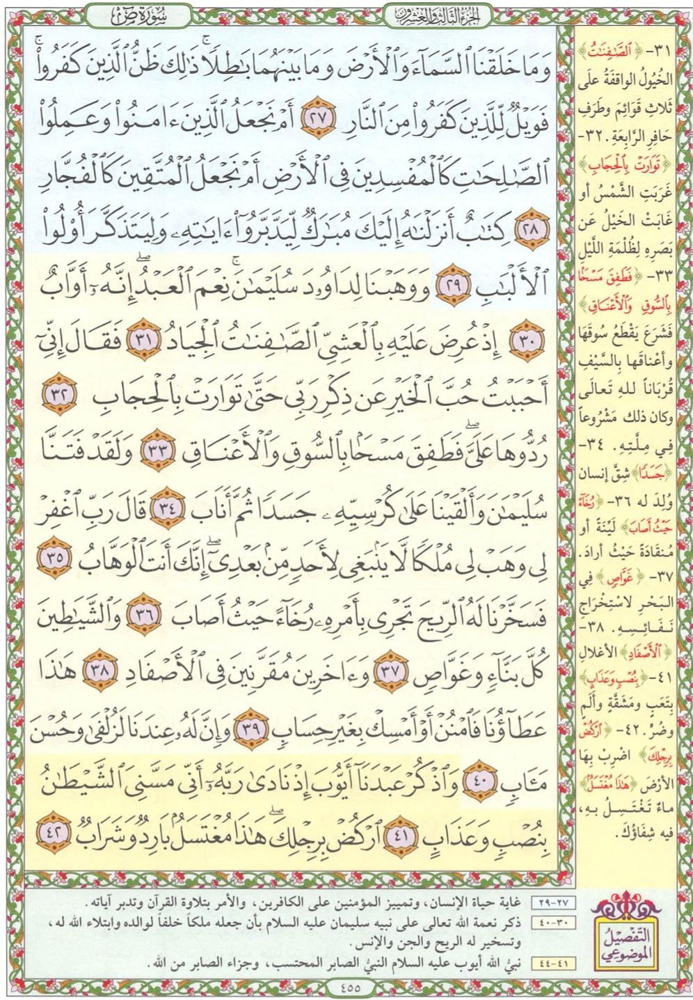

المحاضرة العاشرة: دمج طريقة القصة والترميز ومراجعة أساسيات الحفظ 📖🏷️🧠
نصل في هذه المحاضرة إلى محطة التكامل الإستراتيجي: مراجعة دقيقة لأساسيات الحفظ الثلاثة (ما قبل، أثناء، وما بعد الحفظ) لنقل المعلومات للذاكرة الدائمة، واكتشاف إمكانية تطبيق طريقة الترميز البصري خارج قصار السور، وكيف ندمج في الصفحة القرآنية الواحدة بين الترميز، والرابط الموضوعي، والرابط القصصي (تطبيقاً على صفحة 455 من سورة ص).
مراجعة أساسيات الحفظ الثلاثة (قبل، أثناء، وبعد الحفظ) 🧠🔄
المنظومة العلمية لنقل الآيات والمعلومات من الذاكرة قصيرة المدى إلى الذاكرة الدائمة طويلة المدى
أساسيات ما قبل الحفظ:
- • إخلاص النية والدعاء: تهيئة القلب لاستقبال كلام الله.
- • التفرغ التام وطرد المشتتات: إبعاد الهاتف واختيار مكان هادئ ومريح.
- • اعتماد مصحف واحد: لثبات الرسم العيني لمواقع الآيات.
- • التليين الخماسي: قراءة التفسير، الاستماع للقارئ، وفهم المعنى العام قبل الحفظ.
أساسيات أثناء الحفظ:
- • القراءة البصرية الكلية: إلقاء نظرة شاملة على الصفحة بـ (مجال الرؤية).
- • تجزئة الآيات: تقسيم الصفحة لكتل موضوعية متصلة المعنى.
- • الحفظ بالعينين: التركيز البصري على الكلمات لتصويرها في المخ.
- • التسميع الذاتي: التأكد من تثبيت كل آية مع التي قبلها.
أساسيات ما بعد الحفظ:
- • منحنى النسيان لـ إبنجهاوس: الذاكرة تفقد 70% من المحفوظ خلال 24 ساعة إذا لم تتم المراجعة فوراً.
- • المراجعات الست الذهبية: (بعد 30 دقيقة ➜ قبل النوم ➜ بعد 24 ساعة ➜ بعد أسبوع ➜ بعد شهر ➜ بعد 3 أشهر).
- • النتيجة: استقرار الحفظ في بنك الذاكرة طويلة المدى الدائمة للأبد!
هل يُستخدم الترميز فقط في قصار السور؟ تطبيق صفحة 455 من سورة ص 🏷️📖
كيف نتصرف حين تغيب الروابط اللفظية والموضوعية المباشرة؟ ابتكار "صورة الكتاب الجامع" للآيات الثلاث الأولى
❓ حين لا نجد رابطاً لفظياً ولا موضوعياً مباشراً.. ما الحل؟
في المحاضرة التاسعة قلنا إن الترميز مثالي لقصار السور، ولكن هل يمكن استخدامه في أجزاء السور الطويلة والصفحات الكاملة؟ نعم بالتأكيد!
في مطلع صفحة 455 من سورة ص، نجد ثلاث آيات متتابعة ليس بينها رابط لفظي صريح ولا رابط موضوعي مباشر: آية عن خلق السماوات والأرض، ثم آية عن المؤمنين والمفسدين، ثم آية عن إنزال الكتاب المبارك. هنا يأتي الترميز الذهني بصورة الكتاب الجامع ليربط هذه الآيات في لقطة ذهنية واحدة!
﴿وَمَا خَلَقْنَا السَّمَاءَ وَالْأَرْضَ وَمَا بَيْنَهُمَا بَاطِلًا...﴾ (27)
الرمز الذهني: صورة بديعة جامعة بين السماوات بنجومها والأرض بجبالها.
﴿أَمْ نَجْعَلُ الَّذِينَ آمَنُوا وَعَمِلُوا الصَّالِحَاتِ كَالْمُفْسِدِينَ فِي الْأَرْضِ...﴾ (28)
الرمز الذهني: صورة للمؤمن الصالح في مقابل المفسد الفاجر (شخص ينشر الخير وآخر يفسد).
﴿كِتَابٌ أَنزَلْنَاهُ إِلَيْكَ مُبَارَكٌ لِّيَدَّبَّرُوا آيَاتِهِ...﴾ (29)
الرمز الذهني: صورة كتاب مبارك مفتوح، يضم الصورتين السابقتين في دفتيه!
تخيّل في ذهنك كتاباً مفتوحاً: الصفحة اليمنى فيه مرسوم عليها (السماوات والأرض وما بينهما)، والصفحة المقابلة في وجهها مرسوم عليها (المؤمنون الصالحون مقابل المفسدين)، وهذا كله مجموع داخل الكتاب المبارك الذي نتدبر آياته! بهذه اللقطة البصرية البسيطة، ارتبطت الآيات الثلاث بترتيبها الصحيح دون أدنى تردد.
الرابط القصصي والموضوعي لصفحة 455: قصتا سليمان وأيوب 🐎🌪️🤲
تحليل قصة الخيل، مشهد الفتنة والعطايا الثلاث، ونموذج الصبر والشفاء لسيدنا أيوب

قصة سيدنا سليمان مع الخيل الصافنات الجياد (4 آيات):
ثم تتوالى الآيات الثلاث الخاصة بالخيل:
- • عرض الخيل وقت العشي: ﴿إِذْ عُرِضَ عَلَيْهِ بِالْعَشِيِّ الصَّافِنَاتُ الْجِيَادُ﴾ (31).
- • حبه وشغفه بالخيل في سبيل الله: ﴿فَقَالَ إِنِّي أَحْبَبْتُ حُبَّ الْخَيْرِ عَن ذِكْرِ رَبِّي حَتَّىٰ تَوَارَتْ بِالْحِجَابِ﴾ (32).
- • الأمر بردها وتفقدها ومسحها: ﴿رُدُّوهَا عَلَيَّ ۖ فَطَفِقَ مَسْحًا بِالسُّوقِ وَالْأَعْنَاقِ﴾ (33).
مشهد الفتنة ودعاء الهبة والعطايا الثلاث المسخرة (مشهد مستقل):
﴿وَلَقَدْ فَتَنَّا سُلَيْمَانَ وَأَلْقَيْنَا عَلَىٰ كُرْسِيِّهِ جَسَدًا ثُمَّ أَنَابَ﴾ (34) ➜ أعقبها دعاء سليمان الخاشع: ﴿قَالَ رَبِّ اغْفِرْ لِي وَهَبْ لِي مُلْكًا لَّا يَنبَغِي لِأَحَدٍ مِّن بَعْدِي...﴾ (35).
﴿فَسَخَّرْنَا لَهُ الرِّيحَ...﴾ (36) 👷 2. الشياطين
﴿وَالشَّيَاطِينَ كُلَّ بَنَّاءٍ وَغَوَّاصٍ﴾ (37) ⛓️ 3. المقيدين بالأصفاد
﴿وَآخَرِينَ مُقَرَّنِينَ فِي الْأَصْفَادِ﴾ (38)
ثم التعقيب الإلهي: ﴿هَٰذَا عَطَاؤُنَا فَامْنُنْ أَوْ أَمْسِكْ بِغَيْرِ حِسَابٍ﴾ (39) ➜ ﴿وَإِنَّ لَهُ عِندَنَا لَزُلْفَىٰ وَحُسْنَ مَآبٍ﴾ (40).
قصة سيدنا أيوب عليه السلام: الصبر والشفاء (آخر آيتين بالصفحة):
سيدنا أيوب توالت عليه الابتلاءات العظيمة في جسده وماله، فتوجه إلى ربه بأدب رفيع ناسباً الضر والوسواس للشيطان: ﴿وَاذْكُرْ عَبْدَنَا أَيُّوبَ إِذْ نَادَىٰ رَبَّهُ أَنِّي مَسَّنِيَ الشَّيْطَانُ بِنُصْبٍ وَعَذَابٍ﴾ (41).
جاءه الفرج الإلهي بأمر يسير بأن ينزل ويضرب الأرض برجليه: ﴿ارْكُضْ بِرِجْلِكَ ۖ هَٰذَا مُغْتَسَلٌ بَارِدٌ وَشَرَابٌ﴾ (42) فنبع الماء البارد العذب، واغتسل وشرب فزال كل مرض وألم فوراً!
الخلاصة الإستراتيجية: قوة الدمج بين جميع أساليب الذاكرة!
الصفحة الواحدة لا تُلزمنا برابط واحد فقط؛ ففي صفحة 455 طبقنا الترميز الذهني للآيات الثلاث الأولى (الكتاب الجامع)، ثم الرابط القصصي والموضوعي لقصة الخيل، ثم العطايا الثلاث لمشهد الفتنة، ثم القصة الإيمانية لسيدنا أيوب.. هذا التنوع هو أرقى أساليب الحفظ وأمتنها!
اختبار الاستيعاب السريع (5 أسئلة تفاعلية) 🎯🧠
تحقق فوراً من إتقانك لمفاهيم دمج الترميز والقصة وأساسيات الحفظ
1️⃣ ما هو الهدف الأساسي من تطبيق أساسيات ما بعد الحفظ (المراجعات الست)؟
2️⃣ كيف تم ربط الآيات الثلاث الأولى في صفحة 455 من سورة ص بالرغم من عدم وجود رابط لفظي أو موضوعي مباشر؟
3️⃣ ما هي الآية التمهيدية الافتتاحية التي سبقت قصة سيدنا سليمان مع الخيل في صفحة 455؟
4️⃣ ما هي العطايا والنعم الثلاث التي استجاب الله بها لدعاء سليمان ﴿رَبِّ اغْفِرْ لِي وَهَبْ لِي مُلْكًا﴾؟
5️⃣ في ختام صفحة 455، ما هو التوجيه الإلهي الذي شُفي به سيدنا أيوب عليه السلام من مرضه؟
مبارك! لقد استوعبت محاور المحاضرة العاشرة بنسبة 100%
بدمجك لطريقة الترميز مع القصة والرابط الموضوعي، أصبحت قادراً على تفكيك أي صفحة مهما كانت صعوبتها!
الواجب العملي الشامل للمحاضرة العاشرة 📝🔥
التطبيق العملي المتكامل على صفحة 455 وربطه بمجمع التمارين السابقة
تطبيق صورة "الكتاب الجامع" لأول ثلاث آيات، ثم استحضار قصة الخيل، ثم مشهد الفتنة والعطايا الثلاث، ثم قصة شفاء أيوب عليه السلام.
شغّل المؤقت وسجّل بدقة الزمن المستغرق في الحفظ حتى اكتمال التسميع التام بدون أخطاء، ولاحظ تسارع وتطور زمنك مع تقدم المحاضرات.
مراجعة بعد نصف ساعة، ومراجعة قبل النوم، ومراجعة بعد 24 ساعة، ثم بعد أسبوع، شهر، وثلاثة أشهر.
أنت الآن في أعلى درجات التمكن العقلي من ربط الآيات والصفحات!
حين تمتلك مرونة التنقل بين القصة، والترميز، والموضوعي، واللفظي.. تصبح كل صفحة في القرآن لوحة حية وميسرة في ذاكرتك.